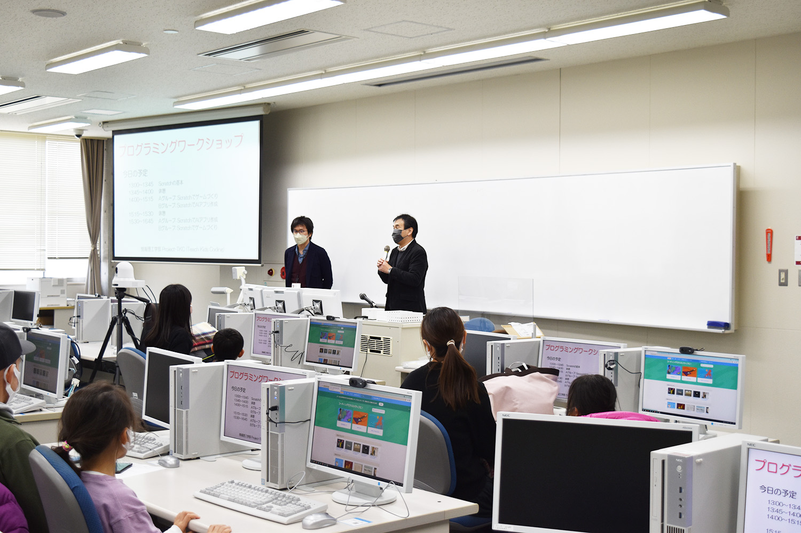
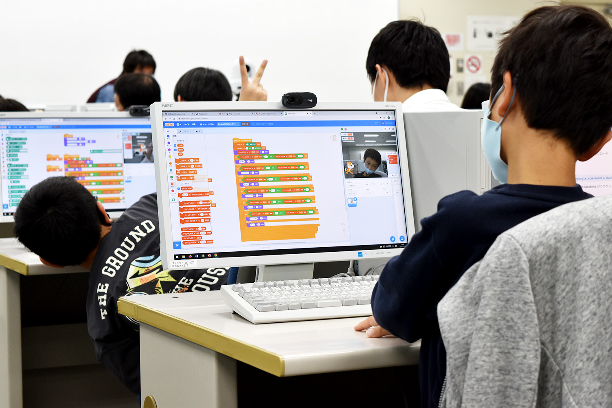

Laboratory Life
We conducted a programming workshop jointly with Collaborative Media Laboratory (Prof. Takada).

Summary
The Faculty of Information Science and Engineering organized a project team (Project-TKC, Teach-Kids-Coding) that aimed at educating children about programming in January, 2021. We conducted an AI programming workshop in Scratch as an activity of the project. 16 children joined the workshop and implemented a rock-paper-scissors program using Google Teachable Machine. Some children eagerly trained the Teachable Machine to recognize their original gestures.
